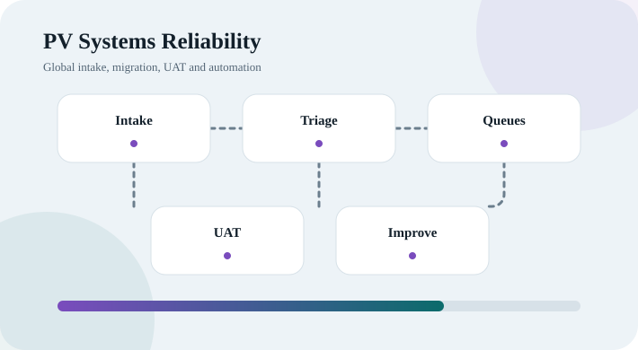

OfficeMate-to-Barti EHR Migration
Legacy-system extraction, 100,000-record profiling, data normalization, target mapping, multi-location reconciliation, validation, device integration planning and workflow redesign.
Read case studyPortfolio projects
The portfolio combines sanitized professional case studies with academic projects built from synthetic or public data. Each project explains the problem, workflow, decisions, technical approach, validation and practical impact.
Legacy-system extraction, 100,000-record profiling, data normalization, target mapping, multi-location reconciliation, validation, device integration planning and workflow redesign.
Read case study
A Git-ready Power BI project using public FDA FAERS ASCII data, star-schema modeling, DAX, country analysis, ROR/PRR, Deneb, decomposition tree and drillthrough.
Read case study
High-volume safety intake, Argus-to-LSMV migration, E2B/email queues, UAT, incident management, configurable line-listing automation, reconciliation and stakeholder coordination.
Read case study
Interactive Excel automation for variable source ranges and patient-identifier columns, with separate-file or multi-sheet output and validation controls.
Read case study
Synthetic CIOMS and MedWatch documents, field extraction, preprocessing, traditional ML, FLAN-T5, standardized ICSR mapping and model evaluation.
Read case study
Conceptual and logical ERD, normalized schema, case/product/event relationships, submissions, workflow stages, role-based security and Oracle SQL.
Read case study
SAS, Excel, SPSS and SQL analyses covering SAP-guided RWE workflows, cohort logic, descriptive statistics, hypothesis testing, predictive modeling and stakeholder communication.
Read case studyConceptual telehealth application for drug–drug, drug–food, drug–disease and drug–supplement interaction alerts. Covered stakeholders, EHR integration, SDLC, feasibility, ROI, Gantt and PERT planning.
Research and architecture studies involving Hadoop, HDFS, MapReduce, Spark, data lakes, healthcare claims processing, genomic pipelines and pharmaceutical big-data use cases.
Led a four-person academic team through project charter, team charter, WBS, schedule, critical path, requirements, user stories, backlog, risks and stakeholder reporting.